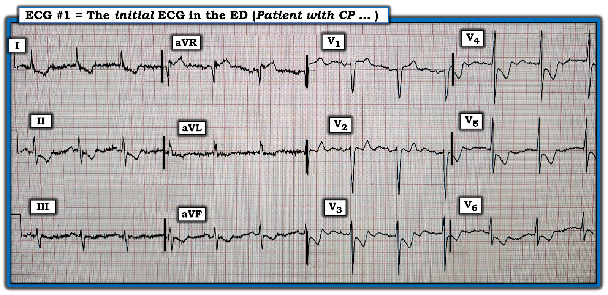
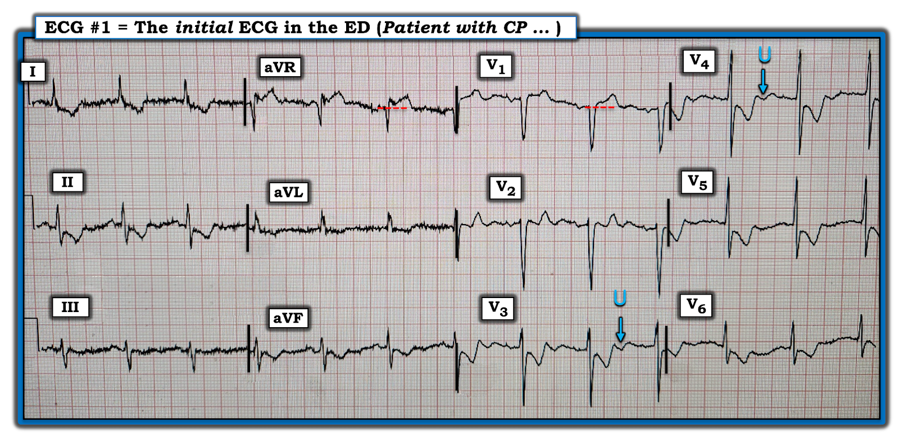
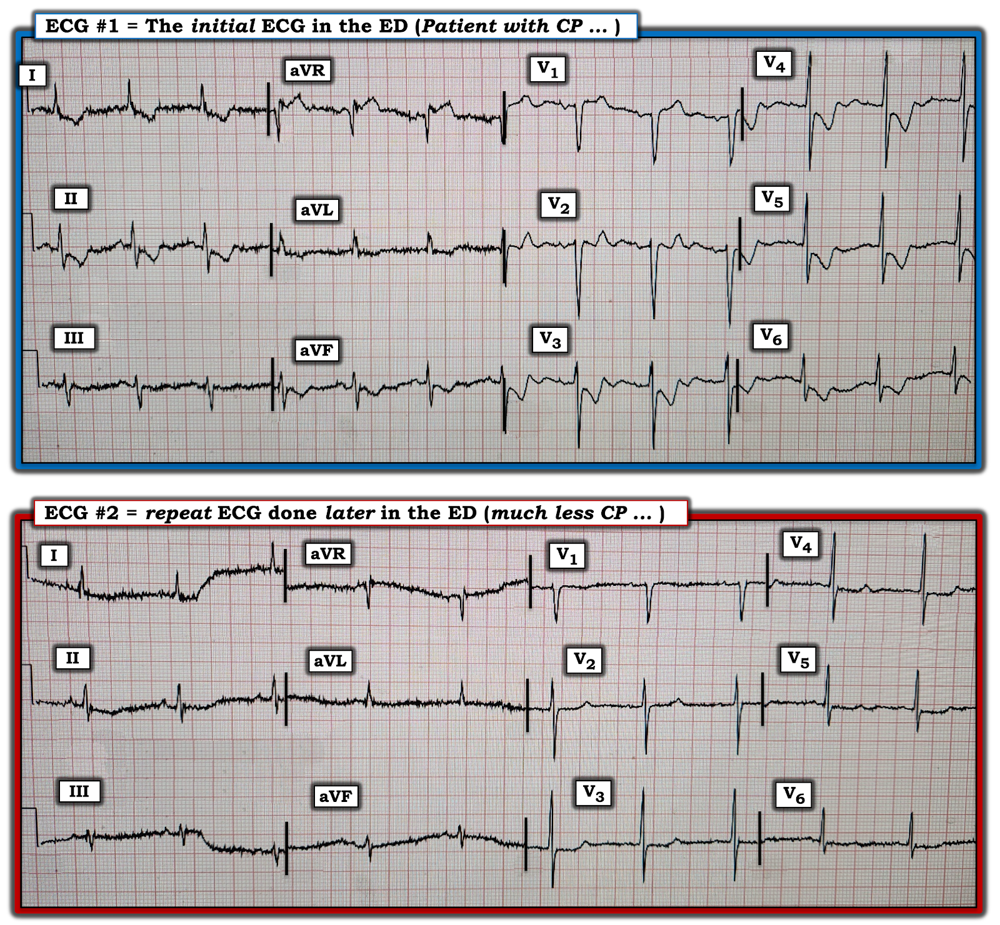

ECG Blog #400 — Đây có phải là NSTEMI?
Điện tâm đồ ở Hình 1 là của một người đàn ông lớn tuổi đã biết có bệnh mạch vành — đến ED (khoa Cấp cứu) vì mới đau ngực – CP (Chest Pain) trong vài ngày qua. Troponin đang chờ kết quả.
CÂU HỎI:
- Với bệnh sử này — Bạn sẽ diễn giải điện tâm đồ ở Hình 1 như thế nào?
- Có nên kích hoạt phòng thông tim (cath lab) không?


SUY NGHĨ CỦA TÔI về điện tâm đồ ở Hình 1:
Đáng tiếc — có nhiễu đường nền đáng kể trên điện tâm đồ ban đầu (nhất là ở các chuyển đạo chi) của ca hôm nay. Dù vậy — nhiễu này không cản trở việc đánh giá chính xác, vì mặc cho đường nền ở các chuyển đạo chi dao động dày và nhấp nhô — hình thái tổng thể của sóng QRST vẫn nhất quán trên toàn bộ bản ghi.
- Nhịp là nhịp xoang tần số ~75/phút. Các khoảng (PR, QRS, QTc) và trục mặt phẳng trán bình thường (khoảng 0 độ, do QRS đẳng điện ở chuyển đạo aVF). Không có lớn buồng tim.
- Về Thay đổi sóng Q-R-S-T: Không có sóng Q — và tăng tiến sóng R bình thường (biên độ sóng R ở các chuyển đạo trước phù hợp — và vùng chuyển tiếp phù hợp, tức là tới chuyển đạo V4 thì sóng R đã cao hơn độ sâu của sóng S).
Đánh giá sóng ST-T ở Hình 1:
Ở một bệnh nhân mới đau ngực — đây là một điện tâm đồ cực kỳ đáng lo ngại!
- Có ST chênh xuống tại điểm J — với đoạn ST dốc xuống gấp góc rõ ở nhiều chuyển đạo. Các đoạn ST chênh xuống này kết thúc bằng phần cuối sóng T dương (terminal T wave positivity) ở các chuyển đạo II,aVF; và ở các chuyển đạo V2 đến V6.
- Có ST chênh lên ở chuyển đạo aVR > V1 (các đường chấm ĐỎ ở các chuyển đạo trong Hình 2). Đoạn ST dẹt ở chuyển đạo III.
- NHẬN ĐỊNH: Ngay cả khi không có điện tâm đồ cũ để so sánh ở bệnh nhân đã biết có bệnh mạch vành này — các thay đổi ST-T nêu trên ở Hình 2 trông cấp tính. Ở bệnh nhân mới đau ngực này — cần kích hoạt phòng thông tim!
ĐIỂM THEN CHỐT (PEARL) #1: Mặc dù thấy Troponin tăng sẽ củng cố thêm cho chỉ định thông tim ngay — thực tế lâm sàng là Troponin lần đầu sẽ không phải lúc nào cũng tăng ở bệnh nhân tắc mạch vành cấp (Xem bài ngày 24 tháng 3 năm 2023 trên Dr. Smith's ECG Blog).
- Vì Troponin lần đầu sẽ không phải lúc nào cũng tăng ở bệnh nhân OMI cấp ( = nhồi máu cơ tim cấp do tắc – acute Occlusion-based MI) — không được dùng một kết quả Troponin độ nhạy cao lần đầu bình thường để loại trừ OMI cấp ở bệnh nhân mới đau ngực và có điện tâm đồ bất thường.
- Vì vậy — chờ đến khi Troponin tăng là lãng phí thời gian quý báu (và có nguy cơ mất đi vùng cơ tim quý giá). Với bệnh sử của ca hôm nay và điện tâm đồ ở Hình 2 — Phải kích hoạt phòng thông tim ngay lập tức!


=================================
ĐIỂM THEN CHỐT (PEARL) #2: Như đã nói ở trên — điện tâm đồ #1 nổi bật với ST chênh xuống lan tỏa (ở hơn 7 chuyển đạo!) — kèm ST chênh lên ở chuyển đạo aVR (cũng như ở chuyển đạo V1). Hình ảnh điện tâm đồ này gợi ý Thiếu máu cục bộ dưới nội tâm mạc lan tỏa (DSI – Diffuse Subendocardial Ischemia) — và phải lập tức nghĩ đến các chẩn đoán phân biệt sau:
- Bệnh mạch vành nặng (do tổn thương thân chung động mạch vành trái (LMain), đoạn gần LAD, và/hoặc bệnh 2 hoặc 3 nhánh nặng) — trong bối cảnh lâm sàng phù hợp có thể là biểu hiện của ACS (hội chứng vành cấp – Acute Coronary Syndrome).
- Thiếu máu cục bộ dưới nội tâm mạc do nguyên nhân khác (tức là loạn nhịp nhanh kéo dài; ngừng tim; sốc hoặc tụt huyết áp nặng; xuất huyết tiêu hóa; thiếu máu; "bệnh nhân nặng", v.v.).
XIN NHẤN MẠNH: Hình ảnh thiếu máu cục bộ dưới nội tâm mạc lan tỏa này không gợi ý tắc mạch vành cấp (tức là đây không phải hình ảnh của nhồi máu cơ tim cấp). Thay vào đó — nó gợi ý thiếu máu cục bộ do các chẩn đoán phân biệt nêu trên!
- Dù vậy, ở bệnh nhân hôm nay, người đến viện vì mới đau ngực và có điện tâm đồ như ở Hình 2 — cần mặc định là bệnh mạch vành nặng có thể cần tái tưới máu cấp cho đến khi chứng minh được điều ngược lại.
=================================
ĐIỂM THEN CHỐT (PEARL) #3: Trên điện tâm đồ ban đầu hôm nay — BẠN có để ý sóng U âm ở các chuyển đạo V3 và V4 không? (các mũi tên XANH trong Hình 2).
- Sau hàng chục năm tìm sóng U âm ở bệnh nhân đau ngực — tôi xin nhấn mạnh rằng đây không phải là dấu hiệu thường gặp. Dù vậy, khi bạn thực sự thấy sóng U đảo ngược (như ta thấy ở điện tâm đồ #1) — đó là một dấu chỉ quan trọng của thiếu máu cục bộ nặng (Duque-Gonzálex và cs. — Cardiovascular Metal Sci 32(4), 2021).
=================================
Ca bệnh hôm nay tiếp diễn:
Các dấu hiệu đáng lo ngại trên điện tâm đồ #1 đã được nhận ra.
- Troponin lần đầu trả về tăng đáng kể. Tuy nhiên trong lúc chờ kết quả Troponin lần đầu này — bệnh nhân cho biết cơn đau ngực đã giảm nhiều, và gần như hết hẳn. Một điện tâm đồ ghi lại (ở Hình 3) được thực hiện vào lúc này.
- Dựa trên việc đau ngực của bệnh nhân gần như đã hết và sự cải thiện trên điện tâm đồ ghi lại (như thấy ở Hình 3) — chẩn đoán NSTEMI (nhồi máu cơ tim không ST chênh lên – Non-ST-Elevation MI) được đưa ra. Yêu cầu kích hoạt phòng thông tim ngay đã bị huỷ.
CÂU HỎI:
- BẠN có đồng ý với các quyết định xử trí nêu trên không?
- Vì sao có hoặc vì sao không?


SUY NGHĨ CỦA TÔI khi xem điện tâm đồ ghi lại:
So sánh từng chuyển đạo ở Hình 3 giữa điện tâm đồ ban đầu của ca hôm nay — với điện tâm đồ ghi lại (làm sau khi đau ngực của bệnh nhân gần như đã hết) — cho thấy cải thiện rõ rệt.
- Sóng ST-T ở điện tâm đồ #2 giờ đây dẹt đồng đều — hầu như không còn ST chênh lên hay chênh xuống.
- NHẬN ĐỊNH: Việc đau ngực của bệnh nhân gần như đã hết cùng lúc với những "cải thiện" trên điện tâm đồ ở Hình 3 — không có nghĩa đây là một "NSTEMI". Thay vào đó, sự thay đổi hình ảnh điện tâm đồ này (ở bệnh nhân đến viện vì mới đau ngực và nay đã gần như hết hoàn toàn) — là dấu hiệu của thay đổi ST-T "động" (dynamic)!
ĐIỂM THEN CHỐT (PEARL) #4:
Khi các
thay đổi trên điện tâm đồ tiến triển tương ứng với sự xuất hiện rồi biến mất của triệu chứng đau ngực — đó là thông tin quan trọng. Nó cho ta biết đang có một quá trình hoạt động, đang diễn ra — và nhiều khả năng cần thông tim sớm kèm tái tưới máu cấp bất kể đã thoả hay chưa thoả định nghĩa theo milimét của STEMI.
- Vấn đề là — động mạch "thủ phạm" có thể tự mở ra và đóng lại nhiều hơn một lần trong quá trình đi đến kết cục cuối cùng — nên ngay cả khi ST chênh lên hết đi cùng lúc với hết đau ngực — việc mạch máu tự mở lại này cũng có thể dễ dàng không kém bị theo sau bởi việc tự đóng lại lần nữa — và lần này, có lẽ sẽ không tự mở lại.
- Chính sự tiến triển liên tục của các thay đổi ST-T, có thể xảy ra theo sự xuất hiện rồi biến mất của triệu chứng, là điều mà chúng ta gọi là thay đổi điện tâm đồ "động". Đoạn ST chênh lên khi đau ngực khởi phát (báo hiệu tắc mạch vành cấp) — rồi đoạn ST trở về gần đường nền, thường sau đó là thay đổi "tái tưới máu" với sóng T đảo ngược báo hiệu mạch "thủ phạm" đã mở lại. Tầm quan trọng của việc nhận ra các thay đổi điện tâm đồ "động" này — là chúng cho thấy một tình huống không ổn định, có nguy cơ tiến triển thêm đến tắc mạch vành vĩnh viễn.
- Ca hôm nay khác với mô tả ở trên — ở chỗ ngoài các chuyển đạo soi gương aVR và V1 — không có ST chênh lên trên điện tâm đồ ban đầu. Điều này không có nghĩa là chưa từng có giai đoạn ST chênh lên — mà chỉ là không ghi nhận được ST chênh lên trên điện tâm đồ duy nhất được ghi trong lúc bệnh nhân đau ngực.
- Dù vậy, bệnh nhân hôm nay đã biết có bệnh mạch vành — đến viện vì mới đau ngực và có hình ảnh điện tâm đồ đáng lo ngại của thiếu máu cục bộ dưới nội tâm mạc lan tỏa — với thay đổi ST-T "động" đi kèm với hết đau ngực.
- ĐIỀU CỐT LÕI: Vì tình huống mô tả ở trên trong ca hôm nay rõ ràng là không ổn định — thông tim sớm có chỉ định ngay lập tức (và với bệnh sử này — thông tim sớm đã có chỉ định ngay khi ghi điện tâm đồ ban đầu). Trong tình huống này — cần xác định giải phẫu mạch vành để quyết định có cần tái tưới máu cấp bằng PCI nhằm ngăn tắc mạch vành sắp xảy ra hay không.
- Đáng tiếc, khi thông tim chỉ được thực hiện vài ngày sau — không phải lúc nào cũng xác nhận được OMI (như trường hợp bệnh nhân hôm nay — khiến "chẩn đoán cuối cùng" NSTEMI trở nên đáng ngờ, và có lẽ cũng vậy với nhiều bệnh nhân được cho là đã bị "NSTEMI" ...).
==================================
Lời cảm ơn: Xin cảm ơn 張三毛 = JJ (từ Đài Loan) đã chia sẻ ca bệnh và bản ghi này.
==================================

Các bài ECG Blog liên quan đến ca hôm nay:
- ECG Blog #205 — Ôn lại Cách tiếp cận hệ thống của tôi khi đọc điện tâm đồ 12 chuyển đạo.
- ECG Blog #185 — Ôn lại cách tiếp cận Ps, Qs, 3R khi đọc nhịp.
- ECG Blog #205 — Ôn lại Cách tiếp cận hệ thống của tôi khi đọc điện tâm đồ 12 chuyển đạo.
- ECG Blog #183 — Ôn lại khái niệm sóng T de Winter (kèm bản in lại Hình minh hoạ từ bản thảo gốc của de Winter trên NEJM).
- ECG Blog #222 — Ôn lại khái niệm thay đổi ST-T động, trong bối cảnh một ca lâm sàng chi tiết.
- ECG Blog #260 — Ôn lại một ca khác minh hoạ khái niệm thay đổi ST-T "động".
- ECG Blog #218 — Ôn lại CÁCH xác định một sóng T là tối cấp?
- ECG Blog #230 — Ôn lại CÁCH so sánh các điện tâm đồ liên tiếp (tức là "Bạn đang so sánh Táo với Táo hay với Cam?").
- ECG Blog #193 — Ôn lại lý do vì sao thuật ngữ “OMI” ( = nhồi máu cơ tim do tắc – Occlusion-based MI) nên thay thế thuật ngữ quen thuộc hơn là STEMI — và — ôn lại những điều cơ bản về cách dự đoán động mạch "thủ phạm" .
- ECG Blog #194 — Ôn lại cách nhận biết LIỆU động mạch “thủ phạm” (tức là động mạch bị tắc cấp) đã được tái tưới máu hay chưa, dựa vào dữ liệu lâm sàng và điện tâm đồ.
- ECG Blog #115 — Cho thấy một ví dụ về việc điện tâm đồ có thể thay đổi mạnh đến mức nào chỉ trong vòng 8 phút.
- Bài ngày 9 tháng 1 năm 2019 trên Dr. Smith's ECG Blog (Vui lòng cuộn xuống cuối trang để xem Bình luận của tôi). Ca này nổi bật với các thay đổi ST-T động được ghi nhận. Cần lưu ý rằng: i) Thiếu máu cục bộ/nhồi máu cấp không phải là nguyên nhân duy nhất có thể gây ra những thay đổi như vậy (thông tim bình thường); ii) Thay đổi tần số tim, trục mặt phẳng trán và/hoặc tư thế bệnh nhân không phải lúc nào cũng giải thích được những thay đổi đó; và, iii) Các thực thể như biến thể tái cực, LVH và/hoặc viêm cơ-màng ngoài tim cấp đôi khi đều có thể góp phần tạo nên sự tiến triển của những thay đổi ST-T động khó đọc trên các điện tâm đồ liên tiếp.
- Bài ngày 22 tháng 8 năm 2020 trên Dr. Smith's ECG Blog — minh hoạ một ca khác có thay đổi ST-T động do một biến thể tái cực.
- Bài ngày 31 tháng 7 năm 2018 trên Dr. Smith's ECG Blog (Vui lòng cuộn xuống cuối trang để xem Bình luận của tôi). Ca này là một ví dụ rất hay về thay đổi ST-T động trên các bản ghi liên tiếp (mà tôi minh hoạ trong Bình luận của tôi) ở một bệnh nhân có nhồi máu cấp đang tiến triển.
=======================================
PHẦN BỔ SUNG (21/10/2023):

ECG Media PEARL #39a (4:50 phút Âm thanh) — Ôn lại khái niệm thay đổi sóng ST-T động (và cách dấu hiệu điện tâm đồ này giúp xác định có chỉ định thông tim cấp hay không).

ECG Media PEARL #46a (6:35 phút Âm thanh) — Ôn lại CÁCH so sánh các điện tâm đồ liên tiếp (tức là Bạn đang so sánh "Táo với Táo" — hay — với Cam?).